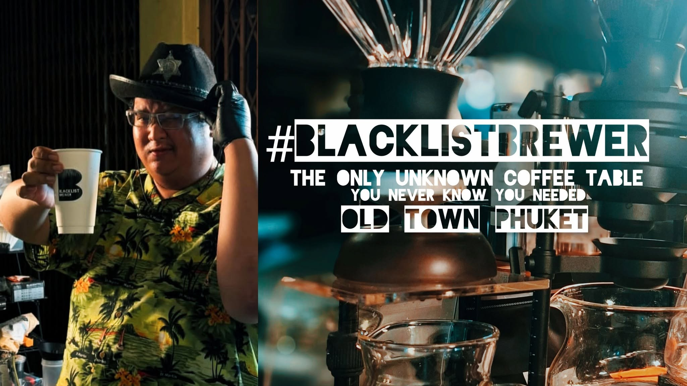

A — Agile Adaptation
Brewing on the street means working with the street. Weather, rain and a changing environment are part of the process, so the coffee table is small, mobile and built to brew well wherever it is set down.
DAY
141
#blacklistbrewer
Last Sunday · 8 November 2026
2 years, 8 months, 5 days since the first Run Day (3 March 2024)
Phuket Old Town · Specialty Coffee at Night
The best V60 experience at night in Old Town Phuket.
A small coffee table on Thalang Road, in front of the Dibuk Road tunnel near the Shell gas station. We keep the setting simple and unhurried, and we serve filter coffee brewed slowly, hot or iced.

Why Blacklist
Blacklist Brewer is a very small coffee stand on the streets of Old Town Phuket. The name speaks of doing good work quietly: to remain a little unknown can be powerful, an experience in itself.
The space between you and us is where discovery happens, through coffee and conversation. As a small stand, our first step is to learn from you — from the customers who help us shape the finest coffee experience.
We take the craft seriously. We study through the SCA (Specialty Coffee Association), we have concentrated on brewing, and next year we will go deeper into sensory work. Those who find us find us as we found them: by looking, by loving coffee, and by taking the time.
If that is you, we will make you a coffee you never knew you needed.
The method
Five principles guide the way the stand operates.
Brewing on the street means working with the street. Weather, rain and a changing environment are part of the process, so the coffee table is small, mobile and built to brew well wherever it is set down.
Every run is counted, because every run is experience. Run Day 141 marks how long the stand has operated, and each week it has grown through customer feedback. We believe that the customer teaches the brewer, and that local coffee competitions add experience from outside. Mastery, in our view, comes through the course of doing.
We do not need to be good at everything. We focus on brewing, and we work independently alongside other coffee projects — roasteries and specialty cafés — so that each can do what it does best.
The workflow is designed around the street rather than around a café. Instead of fitting out a full shop, we choose only the equipment and the steps that let us brew consistently in an open, changing space.
Coffee knowledge is updated every year, but understanding goes further. We try to read what each customer is looking for — whether a casual coffee lover seeking a new experience, or someone looking for exceptional coffee at an affordable price. We explain specialty coffee in a way that does not make anyone feel intimidated by it.
Mentored by the owner of Sixory Coffee in Phuket Old Town. The beans are the same as, or similar to, those of Sixory, roasted by Hacking Coffee Roasters in Bangkok — an association, not an exclusive partnership.
Hours
Tuesday to Saturday · 18:00–22:00
Filter and V60 only. There is no espresso and no other menu at present. Multiple and exotic brewing setups are offered, with rotating origins such as Ethiopia, Colombia, Thai Liberica and many Arabica varietals.
When the cafés close, the table opens.
Sunday · afternoon–22:00
Timed with Phuket Walking Street on Thalang Road. The fullest menu is offered: filter and V60, hand-pressed espresso and Americano from ฿60, Thai Tea via AeroPress, Macchiato, and special milk-based coffee.
This is where Blacklist Brewer began: Run Day 141, and counting.
Walk-up only. There are no seats, but there is a small space to stop, rest and say hello — a place to talk, to ask, and to watch the coffee being made.
The coffee
V60 filter coffee begins at ฿160, hot or iced. Premium lots from ฿200+. Origins change often: Colombia, Ethiopia, Thai, and sometimes Yemen when available. Explore the full range — sour, sweet, strong and floral.
Ask: “What is the best?”
“You are the best.”
On request: shaken iced coffee — a special request, not widely known.
Payment is by cash or PromptPay QR only. Visa and electronic cards are not accepted at present.
The equipment
We choose each brewer for a reason. Together they allow us to brew for acidity, body, sweetness or clarity — and to serve several guests at once.
The most widely known pour-over brewer. Manual brewing calls for hand-pouring skill to control turbulence and flow rate, drawing out a pleasant acidity.
A modular brewing system built for body and sweetness. Its design lets us brew for a fuller mouthfeel.
For guests familiar with the brewing community and curious to try our recipe. We use the AeroPress for black coffee, particularly medium to dark roasts, and for Thai Tea on the Sunday Run only.
An experimental system that uses the siphon method for clean, fast brewing and allows multiple temperature profiles. We use the GX2 for larger drip orders — two or three at once — and to keep unwanted bitterness out of the cup.
Its 80-degree filter shape gives the coffee bed lower resistance and allows a more even extraction. We use it to present hybrid-method coffee at a smaller ratio.
We do not sell equipment. If you would like to explore the brewers we use, you can order them through marketplace apps such as Lazada and Shopee. A short list of links is being prepared.
The experience
Beneath 200-year-old Sino-Portuguese architecture, a reminder of Phuket's old days. Peaceful, and a little romantic for couples; adventurous for coffee lovers. A calm coffee before a night flight, or before heading to Patong and out for the evening.
Look for the cowboy hat and glasses — the brewer's public outfit and alter ego.
Find us
In front of the tunnel to Dibuk Road that connects to the Shell gas station.
Blacklist Brewer
In front of the Dibuk Road tunnel near the Shell gas station.
Walk along Thalang Road to the Dibuk Road tunnel near the Shell gas station and look for the small coffee table in front of it.
If you love coffee and take the time to look, you will find us.
FAQ
Blacklist Brewer is a small, independent specialty coffee stand on Thalang Road in Phuket Old Town, Thailand. We serve hand-brewed V60 filter coffee Tuesday to Saturday, from 18:00 to 22:00. Look for the coffee table in front of the Dibuk Road tunnel, near the Shell gas station.
No. Blacklist Brewer is a small, mobile street-side coffee stand. We focus on carefully prepared coffee rather than operating a conventional café. There is no indoor seating, and most orders are takeaway.
We operate in two modes:
V60 pour-over coffee is available hot or iced, starting at ฿160. Premium coffee lots start at ฿200+. Coffee origins rotate and may include Ethiopia, Colombia, Thailand and Yemen, depending on availability.
Ask us what is currently on the table.
Our fuller menu is available on Sundays. It includes hand-pressed espresso, Americano, Macchiato, Pistachio Milk Iced Latte, Coconut Mocha Iced Coffee and Thai Tea brewed using an AeroPress.
Espresso and Americano start at ฿60.
Absolutely. Brewing is part of the experience. You are welcome to watch the preparation, ask questions about equipment and extraction, or talk about coffee with the brewer.
You don't need to be a coffee expert to enjoy it.
No reservation is required. We operate on a walk-up basis, and solo visitors are welcome. Come by, order a coffee and enjoy a little conversation.
We are on Thalang Road, Phuket Old Town, beside the ORTA Old Town souvenir shop, in front of the Dibuk Road tunnel near the Shell gas station.
Google Maps: 7.884778, 98.388806
We accept cash and PromptPay QR payments. Credit cards and other electronic card payments are not currently accepted.
No. Our equipment is used for preparing coffee at the stand, not for retail sale. We are happy to explain the brewers and techniques we use.
Old Town Guide
A little local knowledge to help you enjoy Phuket Old Town.
Welcome to Phuket Old Town! Whether you're visiting Thalang Road for the Sunday Walking Street, exploring the historic streets, looking for food, or searching for a good cup of coffee, here are some useful tips from someone who works here.
Please don't smoke along the Sunday Walking Street or in areas displaying no-smoking signs. Phuket Old Town is a cultural and family-friendly area where children, families and visitors share the streets.
Thailand has strict smoking restrictions in designated public areas. Violations can carry fines of up to ฿5,000.
Please be considerate of the people around you. Thank you for keeping our streets clean and comfortable for everyone.
If you need a toilet while exploring Thalang Road, there are a couple of options:
It's always a good idea to look for the toilet signs along the walking street.
If you need drinking water, snacks or everyday essentials:
Phuket Old Town doesn't have one official closing time, as individual businesses have their own schedules.
However, most of the evening activity on Thalang Road winds down around 22:00 (10 PM), including the Sunday Walking Street.
If you prefer a quieter atmosphere, feel free to explore the surrounding streets after the crowds have left. Soi Romanee, Dibuk Road and Yaowarat Road are lovely streets to discover.
Yes, especially if you enjoy quiet streets, architecture and photography.
After the evening crowds leave, you can enjoy a different side of the historic neighbourhood. Just remember that many shops, food stalls and services will already be closed.
The Sunday Walking Street (Lard Yai) takes place every Sunday on Thalang Road.
Vendors begin setting up during the afternoon, and the market becomes fully established at around 15:00–16:00 (3–4 PM).
The market generally closes around 22:00 (10 PM).
For the best experience, arrive in the late afternoon or early evening.
Expect a lively mix of local food, street snacks, handmade products, souvenirs, small businesses and local culture.
You can enjoy:
It's more than a shopping street. It's a chance to experience the local atmosphere of Phuket.
No. Lard Yai, also known as Phuket Sunday Walking Street, takes place on Sundays only.
Thalang Road returns to normal traffic and business activities during the rest of the week.
You can still explore Phuket Old Town on other days, but the Sunday market atmosphere is unique to Sunday evenings.
There are more specialty coffee shops in Phuket Old Town than you might expect!
You can explore:
Different cafés have different brewing styles, coffee origins and atmospheres.
If you're visiting on a Sunday evening, you're also welcome to visit Blacklist Brewer for freshly prepared V60 filter coffee.
Several independent cafés and coffee shops around Phuket Old Town offer specialty coffee beans.
Try exploring Soi Romanee and Yaowarat Road. Some local cafés sell beans from Thai and international coffee roasters.
Not sure where to start? Come and ask me at Blacklist Brewer. I'm happy to share some local recommendations and help you find coffee beans that suit your taste.
You can visit Blacklist Brewer, an independent street-side specialty coffee stand on Thalang Road in Phuket Old Town.
We focus on carefully prepared V60 pour-over coffee, available hot or iced.
No reservation is needed. Just walk up and say hello.
A little reminder from a local coffee brewer:
Take your time, explore the small streets, support independent local businesses and enjoy Phuket Old Town at your own pace.
And if you have a question about coffee, come find me. I'm always happy to talk about it.
Contact
The best way to reach us is Instagram. We do not publish a phone number or email address.
If you enjoy the beans, you may wish to visit Sixory Coffee or Hacking Coffee Roasters.